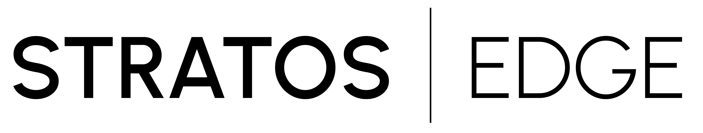
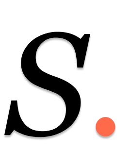

Logo & Identity.
The Stratos Edge wordmark and lettermark — construction, usage, and rules.
Wordmark construction
Set in Work Sans with a vertical separator between STRATOS and EDGE. STRATOS is weight 500, letter-spacing 0.18em. EDGE is weight 300, letter-spacing 0.14em, opacity 85%. The separator is a 1px × 13px bar at 25% white (on dark) or 15% black (on light) opacity.

Clear space and don'ts
Minimum clear space on all sides equals the cap height of the letterforms. Never crop into that space, never distort proportions, never recolor, never add drop-shadows or effects, never replace the fonts, and never embed the wordmark inside filled containers or colored circles.
Lettermark
A compact mark for tight contexts where the full wordmark won't fit: favicons, app icons, profile photos, watermarks. Carries the signature coral period device.
